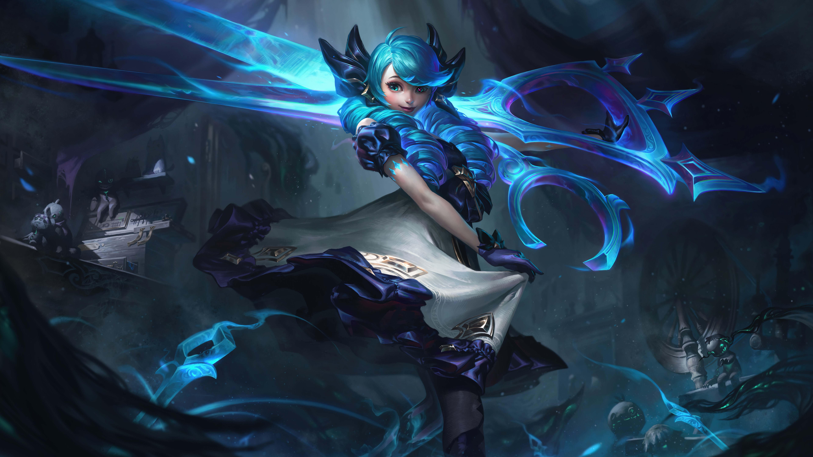

Gwen
En el reino olvidado de Camavor, existió una vez un pueblo alejado del trono. Fue aquí, en las colonias rurales, donde una humilde costurera fabricó a su amada muñeca, Gwen. Lo poco que Gwen recuerda de su pasado, lo recuerda con amor. La costurera y la muñeca pasaban sus días confeccionando juntas, Gwen con las tijeras en sus manos inmóviles mientras su creadora cosía cerca de ella con hilo y aguja. Por las noches, las dos se escabullían debajo de la mesa del comedor y la costurera desafiaba a Gwen a duelos inventados: el choque de los cubiertos contra las tijeras resonaba en la cocina iluminada por velas.

Pero un día, Gwen despertó en una playa oscura lejos de su hogar. Por obra de una magia desconocida, se había transformado en una niña de verdad que podía mover las manos y los pies por su cuenta. Gwen se tomó la vida con alegría, sorprendida de cuán lejos podían ver sus ojos y de cuán maravilloso se sentía el viento en su espalda y cada guijarro en su mano. A lo largo de la costa, encontró escombros desperdigados y abandonados por milenios. Al lado de cofres rotos, había herramientas que le resultaron extrañamente familiares: tijeras, agujas y hilo. Gwen las reconoció de inmediato como las herramientas de su creadora.